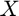
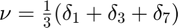
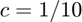
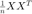
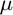
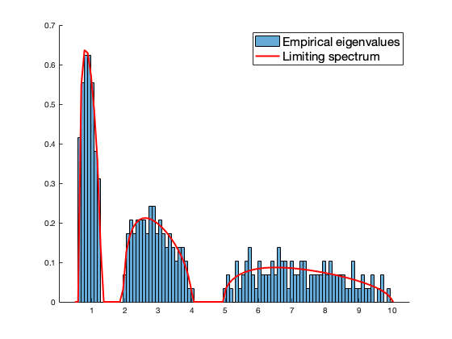
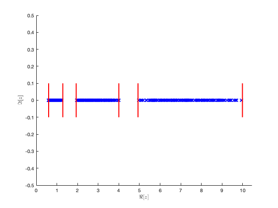
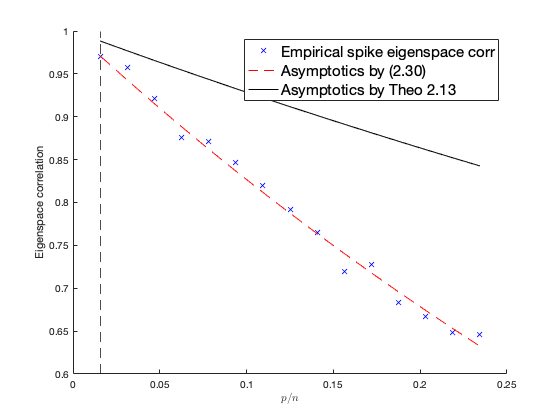

Section 2.4.2: Eigenvector projections and subspace methods
This page contains an application example of estimating functionals of random matrices . Fully separable case with  and 
Contents
- Empirical eigenvalues of  versus limiting spectrum
- Determine the support of  via Theorem 2.9
- Empirical eigenspace correlation with the proposed estimator
- Estimation of eigenspace correlation with rectangular contour
- Estimation of eigenspace correlation with line integrals
- Application: "spiked" model eigenvalue correlation
Empirical eigenvalues of versus limiting spectrum
close all; clear; clc coeff = 3; p = 100*coeff; n = 1000*coeff; c = p/n; eig_C = [1,3,7]; cs = [1/3 1/3 1/3]; C = diag([eig_C(1)*ones(p/3,1); eig_C(2)*ones(p/3,1); eig_C(3)*ones(p/3,1)]); %%% population covariance [U,eigs_C] = eig(C); eigs_C = diag(eigs_C); rng(928); Z = randn(p,n); X = sqrtm(C)*Z; SCM = X*(X')/n; %%% sample covariance matrix and its empirical spectral measure [hat_U,eigs_SCM] = eig(SCM); eigs_SCM = diag(eigs_SCM); edges=linspace(min(eigs_SCM)-.1,max(eigs_SCM)+.1,100); clear i y = 1e-5; zs = edges+y*1i; mu = zeros(length(zs),1); tilde_m=0; for j=1:length(zs) z = zs(j); tilde_m_tmp=-1; while abs(tilde_m-tilde_m_tmp)>1e-6 tilde_m_tmp=tilde_m; tilde_m = 1/( -z + 1/n*sum(eigs_C./(1+tilde_m*eigs_C)) ); end m = tilde_m/c+(1-c)/(c*z); mu(j)=imag(m)/pi; end figure(1) %%% limiting versus empirical spectral measure of SCM subplot(2,1,1); hold on histogram(eigs_SCM, 60, 'Normalization', 'pdf'); plot(edges,mu,'r', 'Linewidth',2); legend('Empirical eigenvalues', 'Limiting spectrum', 'FontSize', 15)
Determine the support of via Theorem 2.9
Tol = 1e-3; search_min = -2; search_max = Tol; search_domain = linspace(search_min, search_max, 5000); %%% search domain of tilde_m [~,x_d] = SCM_func_inv(search_domain, eig_C, cs, c); x_d_1 = x_d(1:end-1); x_d_2 = x_d(2:end); zero_deri_index =find(sign(x_d_1).*sign(x_d_2)<0); support_edges = SCM_func_inv(search_domain(zero_deri_index), eig_C, cs ,c); if length(support_edges) ~= 2*length(eig_C) error('Error: nb of (discrete) eigenvalues and nb of suport edges not match!') end figure(1) %%% compare estimated support with empirical eigenvalues subplot(2,1,2); hold on plot(eigs_SCM, zeros(size(eigs_SCM)), 'bx'); for edge=support_edges plot(edge*ones(10,1), linspace(-.1,.1,10),'r', 'Linewidth',2); end xlabel('$\Re[z]$', 'Interpreter', 'latex') ylabel('$\Im[z]$', 'Interpreter', 'latex') axis([0 max(eigs_SCM)+.5 -.5 .5]);
Empirical eigenspace correlation with the proposed estimator
emp_eig_corr = zeros(1,length(cs)); index = 1; for a=1:length(cs) U_spike = U(:,index:index+p*cs(a)-1); hat_U_spike = hat_U(:,index:index+p*cs(a)-1); emp_eig_corr(a) = trace(U_spike*(U_spike')*hat_U_spike*(hat_U_spike'))/p/cs(a); index = index+p*cs(a); end disp('Empirical eigenspace correlation:') disp(emp_eig_corr)
Empirical eigenspace correlation:
0.9652 0.9279 0.9492
Estimation of eigenspace correlation with rectangular contour
estim_eig_corr = zeros(1,length(cs)); for a=1:length(cs) popu_eig = eig_C(a); clear i y_min = -1; y_max = 1; x_min = support_edges(2*a-1)-.1; x_max = support_edges(2*a)+.1; zs1 = (x_max:-0.1:x_min) + y_max*1i; zs2 = x_min + (y_max:-0.1:y_min)*1i; zs3 = (x_min:0.1:x_max) + y_min*1i; zs4 = x_max + (y_min:0.1:y_max)*1i; zs = [zs1, zs2, zs3, zs4]; %%% rectangular contour %zs = [zs1, zs3]; integrand = zeros(length(zs),1); tilde_m=0; for j=1:length(zs) z = zs(j); tilde_m_tmp=-1; while abs(tilde_m-tilde_m_tmp)>1e-6 tilde_m_tmp=tilde_m; tilde_m = 1/( -z + 1/n*sum(eigs_C./(1+tilde_m*eigs_C)) ); end integrand(j) = 1/z/(1+tilde_m*popu_eig); end estim_eig_corr(a) = real(trapz(zs,integrand)/(pi*2i)); end disp('Eigenspace correlation estimated with contour integration (2.29):') disp(estim_eig_corr)
Eigenspace correlation estimated with contour integration (2.29):
0.9655 0.9278 0.9484
Estimation of eigenspace correlation with line integrals
estim_eig_corr = zeros(1,length(cs)); for a=1:length(cs) xs = linspace(support_edges(2*a-1),support_edges(2*a), 500); popu_eig = eig_C(a); integrand = zeros(length(xs),1); tilde_m=0; for j=1:length(xs) clear i x = xs(j); y = 1e-5; z = x+y*1i; tilde_m_tmp=-1; while abs(tilde_m-tilde_m_tmp)>1e-6 tilde_m_tmp=tilde_m; tilde_m = 1/( -z + 1/n*sum(eigs_C./(1+tilde_m*eigs_C)) ); end integrand(j) = popu_eig*imag(tilde_m)/( 1 + 2*popu_eig*real(tilde_m) + popu_eig^2*abs(tilde_m)^2 )/pi/x; end estim_eig_corr(a) = trapz(xs,integrand); end disp('Eigenspace correlation estimated with line integral (2.30):') disp(estim_eig_corr)
Eigenspace correlation estimated with line integral (2.30):
0.9659 0.9281 0.9485
Application: "spiked" model eigenvalue correlation
clear; close all; clc m_loop = 1:15; p_over_m = 16; n = 1024; c_loop = p_over_m*m_loop/n; emp_eig_corr = zeros(length(m_loop),1); estim_eig_corr = zeros(length(m_loop),1); rng(928); for m_index=1:length(m_loop) m = m_loop(m_index); p = p_over_m*m; c = p/n; Z = randn(p,n); eig_C = [1,2]; cs = [(p_over_m-1)/p_over_m, 1/p_over_m]; C = diag([eig_C(1)*ones((p_over_m-1)*m,1); eig_C(2)*ones(m,1)]); %%% population covariance [U,eigs_C] = eig(C); eigs_C = diag(eigs_C); X = sqrtm(C)*Z; SCM = X*(X')/n; %%% sample covariance matrix and its empirical spectral measure [hat_U,eigs_SCM] = eig(SCM); eigs_SCM = diag(eigs_SCM); edges=linspace(min(eigs_SCM)-.1,max(eigs_SCM)+.1,20); Tol = 1e-3; search_min = -3; search_max = Tol; search_domain = linspace(search_min, search_max, 5000); %%% search domain of tilde_m [~,x_d] = SCM_func_inv(search_domain, eig_C, cs, c); x_d_1 = x_d(1:end-1); x_d_2 = x_d(2:end); zero_deri_index =find(sign(x_d_1).*sign(x_d_2)<0); support_edges = SCM_func_inv(search_domain(zero_deri_index), eig_C, cs ,c); % empirical evaluation of the "spike" eigenspace correlation U_spike = U(:,p-m+1:p); hat_U_spike = hat_U(:,p-m+1:p); emp_eig_corr(m_index) = trace(U_spike*(U_spike')*hat_U_spike*(hat_U_spike'))/m; % theory xs = linspace(support_edges(3),support_edges(4), 500); popu_eig = eig_C(2); integrand = zeros(length(xs),1); tilde_m=0; for j=1:length(xs) clear i x = xs(j); y = 1e-5; z = x+y*1i; tilde_m_tmp=-1; while abs(tilde_m-tilde_m_tmp)>1e-6 tilde_m_tmp=tilde_m; tilde_m = 1/( -z + 1/n*sum(eigs_C./(1+tilde_m*eigs_C)) ); end integrand(j) = popu_eig*imag(tilde_m)/( 1 + 2*popu_eig*real(tilde_m) + popu_eig^2*abs(tilde_m)^2 )/pi/x; end estim_eig_corr(m_index) = trapz(xs,integrand); end figure hold on plot(c_loop,emp_eig_corr,'bx') plot(c_loop,estim_eig_corr,'r--') plot(c_loop,(1-c_loop/4)./(1+c_loop/2),'k') xline(c_loop(1),'k--'); xlabel('$p/n$', 'Interpreter', 'latex') ylabel('Eigenspace correlation') legend('Empirical spike eigenspace corr', 'Asymptotics by (2.30)', 'Asymptotics by Theo 2.13', 'FontSize', 15) function [x,x_d] = SCM_func_inv(tilde_m, eig_C, cs, c) %SCM_func_inv functional inverse of Stieltjes transform of large sample %covariance model % INPUT: Stieltjes transform tilde_m, (k-discrete) eigenvalues of C (or % nu), vector cs=p_a/p for a=1,...k, ratio c=p/n % OUTPUT: functional inverse x (of tilde_m) and its first derivative x_d if length(eig_C) ~= length(cs) error('Error: nb of (discrete) eigenvalues and nb of classes not match!') end x = -1./tilde_m; x_d = 1./(tilde_m.^2); for a=1:length(cs) x = x + c*cs(a)*eig_C(a)./(1+eig_C(a)*tilde_m); x_d = x_d - c*cs(a)*eig_C(a)^2./(1+eig_C(a)*tilde_m).^2; end end